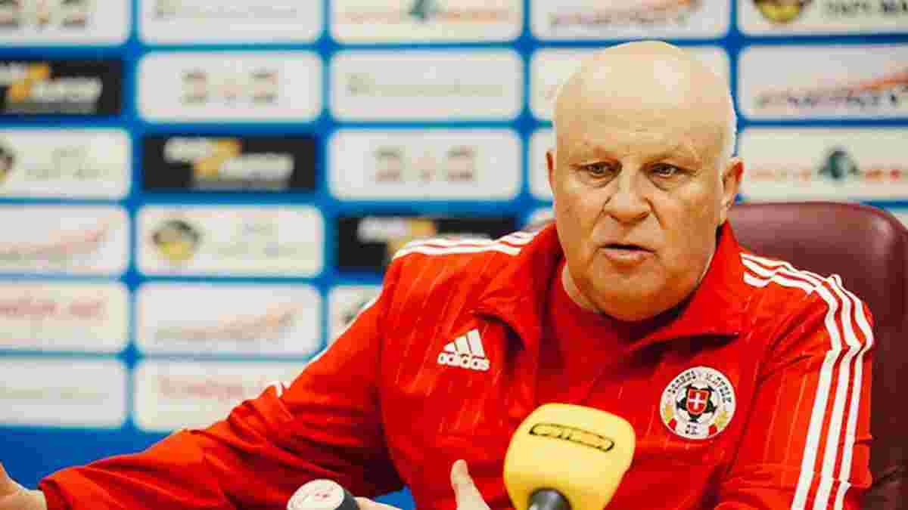

Команда Михайла Мудрика вкотре звільнила тренера. Після поразки від Астон Вілли (0:2) боси Челсі виставили за двері Грема Поттера. Зараз у команди складне завдання: знайти тренера, який готовий очолити клуб посеред сезону. Ми вирішили спростити пошуки наставника для лондонців і запропонувати їм п'ять українських фахівців, які точно не зіпсують погоду в Челсі на даний момент.

1. Віталій Кварцяний
У нещодавньому інтерв'ю Валерій Федорчук поділився своєю думкою про легендарного тренера Волині: "Кварцяний не такий жорстокий. Просто він людина такої харизми". У Луцьку футболіста відправив Мирон Маркевич, напевне, щоб загартувати. Однак, Федорчук зізнався, що не хотів їхати до Кварцяного через його надмірний запал, але зібрав всі сили в кулак і пішов пакувати валізи. Колишній гравець майже всіх львівських команд не єдиний, хто не хотів грати під керівництвом Віталія Кварцяного. Таких безліч. У Челсі зараз проблема: у команду за шалені гроші їдуть всі, хто хоча б раз грав у футбол. Результат? Його можемо побачити у звільненні Грема Поттера, який обіцяв, що після Чемпіонату світу ми побачимо зовсім інший Челсі. І справді, лондонський клуб змінився і взявся за роль Робіна Гуда. З приходом Кварцяного в команду футболісти будуть двічі думати, чи підписувати контракт з Челсі. Так аристократи почнуть економити гроші і, можливо, позбудуться баласту всередині, бо не кожен зможе витримати надмірні емоції на тренуваннях і матчах. Федорчук також додав: "Після нього ти або граєш у гарних командах, або вже закінчуєш". То ж після призначення Віталія Кварцяного головним тренером Челсі можна чекати на масове завершення кар'єр молодих футболістів.
2. Олег Блохін
Олегу Володимировичу вже 70 років, але приклад Луческу показує, що в Блохіна може бути ще багато років тренерської кар'єри. На ютуб-каналі "ВЗБІРНА" в одному з випусків Ігор Циганик сказав, що Блохін - перший "іноземний" тренер збірної України. Пояснюючи це тим, що, граючи й тренуючи за кордоном, він набрався європейського менталітету. В Челсі Блохін стане першим українським тренером, який принесе в команду не якийсь там дух переможців, а Золотий м'яч. Гравці Олімпіакоса, яких колись тренував Олег Володимирович, розповідали, що той приносив Золотий м'яч на тренування, щоб футболісти знали, на кого рівнятись. Такий вчинок в Челсі одразу покаже футболістам, хто господар в роздягальні. Майже всі колишні тренери аристократів були з'їджені колективом через недостатній авторитет у футбольних колах. В Блохіна з ким все добре. Навіть, якщо Кепа знову відмовиться йти на заміну, бо, є підозра, що він на пів ставки підробляє тренерів в Челсі і сам все вирішує, то український тренер своїм его сам винесе його з рамки воріт. "Якби він міг себе поцілувати, то зробив би це", - якось сказав Ігор Суркіс. Натомість в Челсі роль "цілувальника Блохіна" може виконувати Михайло Мудрик, таким чином, виборюючи місце в стартовому складі.
3. Руслан Ротань
Якщо річ заходить про призначення нового головного тренера в команду, яка щойно його позбулася, то на думку одразу спадає Ротань. Жарти про роботу Руслана Петровича вже зайшли надто далеко, але зараз є реальна можливість піти з Олександрії непереможним. У тренера в активі навіть з’явилась перемога. Команда Ротань в 19-му турі УПЛ розгромила Ворсклу 3:0 і забрала у нього можливість стати першим тренером, який програв 3 матчі з різними командами в різних країнах. А що, якщо Ротань тренує 3 команди, не задля кількості команд, а через щільний графік? Тоді Англія саме для нього, і навіть якщо цього буде замало, то завжди можна тренувати ще когось. Тим паче, Руслан Петрович є найкращим варіантом тренера для Михайла Мудрика у Челсі. Зараз активно шириться думка про оренду українця в клуб трішки нижчого рангу, ніж лондонці, але Ротань знає можливості Михайла. Мудрик був основним тренером у збірній Ю-21, а зараз - у збірній України. Челсі не повинно бути винятком. Тож Ротань у Челсі - вигідний варіант для української сторони. Вже є навіть досвід гри на англійській арені, хоча невдалий, але і Поттер не сяяв хорошими результатами.
4. Андрій Шевченко
Ще після звільнення Тухеля з Челсі, боси аристократів одним оком глянули на Шевченка. Але більше до душі припав Грем Поттер. Зараз знову лондонці без тренера і скоріше всього, в списку кандидатів фігуруватиме прізвище українця. Шевченко, на думку авторитетних видань, є одним з найгірших трансферів Челсі за всю історію. Тому призначення його головним тренером команди дасть йому можливість відробити всі борги перед Челсі. Зараз його колишня команда перебуває не в найкращому становищі і її потрібно рятувати. У Андрія Миколайовича вже є рятівний досвід. Після збірної України він прийшов на допомогу італійській Дженоа, яка була на межі пониження в класі. Однак після невдалого періоду Шевченка прибрали, поставили іншого, але й той не впорався з завданням зберегти клуб в еліті. Тому проблема була не в Миколайовичу. Після замаху на Серію А Шевченко в пошуку роботи: Мілан поки не планує звільняти Піолі, хоча вже ходили чутки про його відставку, а в київське Динамо не дуже хочеться. Челсі з таким підбором футболістів - чудовий шанс довести футбольній спільноті, що прекрасний період в збірній України не випадковість, а результат клопіткої тренерської роботи
5. Михайло Фоменко
Гра збірної України під керівництвом Михайла Фоменка "дуже" сподобалась українським вболівальникам. Найбільший захват викликали незрозумілі заміни та гра у двох опорних півзахисників. Михайло Іванович є прихильником гри "аби не гірше". На думку відразу спадає гра проти Польщі на Євро-2016, коли при рахунку 0:1 на користь поляків, тренер випускає Тимощука для рекорду та для того, щоб не йти на штурм і не отримати ще один гол у свої ворота на контратаці. Челсі зараз йде на 11-му місці в АПЛ, ще є шанси потрапити в зону єврокубків, але і клуби, які знаходяться вище, не збираються поступатись місцем. Тому краще сфокусуватись на тому, щоб не опуститись ще нижче. Фоменко - найкращий варіант для цього. В роздягальні Челсі буде висіти надпис "краще синиця в руках, ніж журавель в небі", щоб гравці зайвий раз не йшли в атаку, щоб вирвати перемогу. Тим паче в арсеналі аристократів є багато гравців в центрі поля, тому просто уявіть, якою насиченою буде опорна зона в Челсі під керівництвом Михайла Фоменка.
Андрій Павлечко